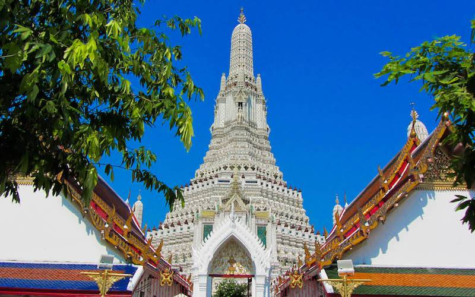
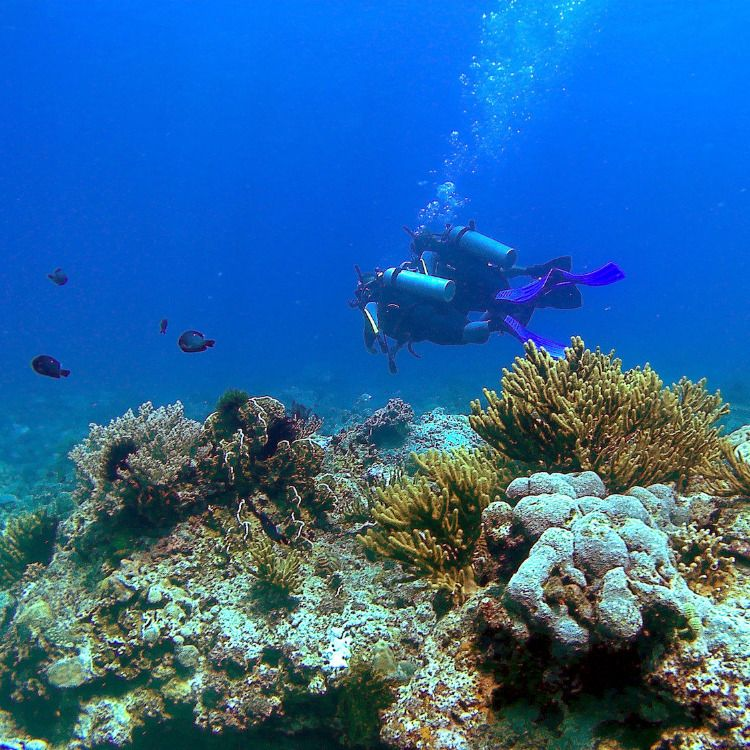

Thailand
I travelled to Thailand when I was about 8 years old.
But it left such a profound impression on me that I can
still remember a great deal about my time there. Not only
is the weather almost consistently wonderful and the food
absolutely amazing, but the colours of the cities and
countryside are so vibrant and memorable. The society,
rotates around Budhism a great deal, and I was struck by
the great number of beautiful temples as shown in the
picture above. But above all things that Thailand has to
offer, the people are far and away the greatest part of
the country. There is kindness and generosity in every
citizen and you'll be surrounded by smiling faces.
Italy
I have spent several summers in Italy. All over the
country. It has an incredible, rich, history which is
displayed in the hundreds of historic towns and villages
throughout. The countryside is stunning, particularly in
Florence, but equally as impressive are Italy's coastal
towns, built into the rock like in Sorrento. This sunny
part of the country looks out at the dormant volcano
Vesuvius and the ancient city of Pompeii. Without a doubt,
the highlight of my time spent in Italy has been the food.
You'll find nowhere else that does Italian food better!
France
Some of my earliest memories are of France. And with a father
that speaks French, made for much better holidays!
Africa
From the Sahara Desert to the pyramids in Egypt, there
are many places I wish to visit in Africa. I might try to discover something new
about the ancient Egyptians!!! The other big reason to travel
there is for the beautiful colours throughout the continent
and the crazy animals!

Amazon
This is a big one. Many, many people have become lost in
the Amazon rainforest. With its vast size, it's no wonder
this happens. If I travel to this mysterious land I'd do a lot of
exploring, and some protecting of its precious ecosystem. There's
so much to do and so much to learn.
Svalbard
I have always been fascinated by the cold, remote, peaceful and the potentially dangerous. Svalbard ticks all
these boxes. Its beautiful natural landscapes are quiet and eerie. Plus who wouldn't want to see the Northern Lights!
However, there are more polar bears than humans!
Antarctica
This, like Everest, has historically conquered people. And its only
until relatively recently that humans have been able to survive
its treacherous environment. I think when I travel there, I'll re-trace
the route of the famous doomed expedition of Captain Robert F. Scott over 100 years ago.
Everest
I think my desire to attempt something like this comes
from my uncle. He has always been a very keen trekker, and
when he was younger, he climbed to Base Camp on Everest. I'll
start by climbing the three peaks here and then smash this record but it's so expensive and has lots
of tourists too! Perhaps one day I'll try a quieter route.
80,000 Ft
There's many things the world has to thank America for. Right now,
one of my favourites is the U2 Spy Plane. Capable of travelling up to
80,000ft, this impressive plane has been in service since 1956! What's
more, I want to go in one, and travel up that high, see the Earth's curvature from
up there, and the deep blackness of space.

Diving
I want to do things that scare me. Very deep water is one of them. The possibilities of exploration
outweigh that fear now. I think I'll start off with pretty coral reefs
in shallow waters, especially as they're dying off now so I'll have to
be quick. Then I'll work my way to dive deeper and deeper so I can swim with whales,
maybe find something interesting!

Mariana Trench
Now this, is the definition of scary. Something that is significantly
deeper than the height of a commercial plane's cruising altitude.
No light gets to it, just me drifting down for hours until I reach the bottom. I would love
to see what's down there, and hope when I want to return to the surface
the weights that keep me at the bottom release!